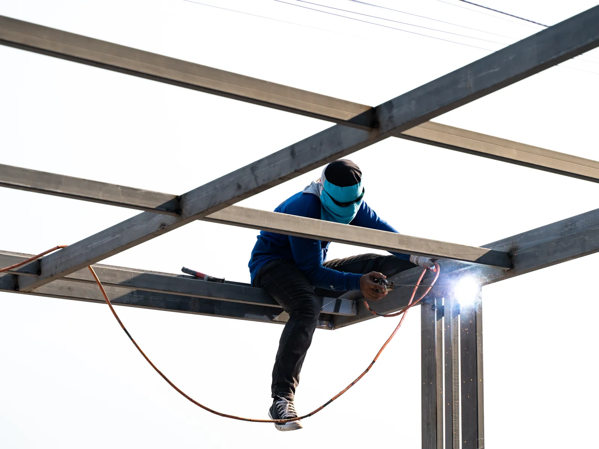

Home · Service Areas · LaPlace
Mobile Welders in LaPlace, LA
At Big Easy Mobile Welders, we bring on-site welding to LaPlace homes, shops and job sites, from gate and railing repairs to custom steel, aluminum and stainless work. Our licensed, insured welders arrive in a fully equipped mobile unit and repair heavy pieces in place.

We come to the jobWhat Comes With a Mobile Welding Job in LaPlace?
Every mobile welding job in LaPlace starts with a free, no-obligation estimate and ends with a walkthrough of the finished weld. In between, a licensed, insured welder brings a fully equipped mobile unit to your property, cleans the metal with brushes and grinders, and completes the repair or custom piece on site.
No-Cost Quote Up Front
We look over the piece and quote it for free, with transparent pricing and no hidden fees.
Trained, Insured Welders
A licensed, insured and highly trained welder handles the job, backed by more than 20 years of experience.
Your Driveway Becomes the Shop
A fully equipped mobile unit comes to your home, shop or job site with the tools on board.
Metal Cleaned Before Welding
Brushes and grinders take off rust, old paint and scale, so the weld bonds to clean metal.
Repairs and Custom Builds
We take on quick repairs and custom fabrication in mild steel, aluminum and stainless steel.
Follow-Up After the Job
We review the work with you, keep payment easy and stay available for follow-up.

What Makes LaPlace Property Owners Hire a Mobile Welder?
LaPlace property owners hire a mobile welder when a metal fixture breaks, bends or rusts and is too heavy or too fixed in place to haul to a shop. Typical calls include a driveway gate off its hinges, a loose porch railing, a cracked trailer tongue, storm-bent fencing and custom brackets for shops and contractors.
- Gate Scraping the Concrete
- Broken Gate Hinge
- Wobbly Porch Railing
- Rust Eating a Fence Post
- Storm-Bent Fence Sections
- Cracked Trailer Tongue
- Broken Steel Bracket
- Corroded Pipe Support
Which Welding Services Do We Bring to LaPlace?
In LaPlace, we offer iron railing, gate, fence, pipe, custom and arc welding, along with window frame repair, specialized mobile jobs and metal fabrication. Our on-site mobile welding reaches homes, businesses and contractors' job sites, and every service begins with a free estimate.

Pipe Welding
Pipe and pipeline repair on site, with stick and gas-shielded processes matched to the pipe.
View pipe welding →
Fence Welding
Fence repairs and custom fence fabrication, with the material and process chosen for your fence.
View fence welding →
Gate Welding
Gate repairs and custom gates in steel or aluminum, with materials and tools covered in your estimate.
View gate welding →
Iron Railing Welding
Custom indoor and outdoor railings for stairways, decks and balconies, built to fit your property.
View railing welding →
Arc Welding
Shielded and non-shielded arc welding for commercial and residential customers.
View arc welding →
Custom Welding
Custom ironwork, estimated before we start so we arrive with the right equipment for the job.
View custom welding →
How Soon Should LaPlace Owners Call a Welder?
Call a welder in LaPlace as soon as a metal piece starts to sag, crack or rust through at a joint. Small failures, such as one broken weld on a gate frame, usually take less work to repair than the bent hinges, split posts and spreading corrosion that follow when the damage is left alone.
A Gap That Keeps Widening
A gate that misses its latch or a railing pulling off the wall usually means a weld or post gave way.
Fine Cracks Along a Bead
A thin crack beside an old weld can lengthen each time the metal flexes.
Bubbling Paint Over Steel
Blistered paint often hides rust. Once the metal thins, that section may need to be cut out before welding.
How Is Welding in LaPlace Different From Other Areas?
Welding in LaPlace often involves single-family homes built from the 1970s onward, with fences, gates and carports exposed to humid air on the east bank of the Mississippi River. A major levee for flood protection is still under construction, so storm damage and rust are common concerns for outdoor metal.

The housing stock and setting in LaPlace explain much of the metalwork we are asked to do.
- Mostly Single-Family Homes.Single-family detached homes make up 82.5 percent of LaPlace housing units in the Census Bureau's 2020 to 2024 American Community Survey.
- Built in Two Waves.The same survey dates 47.2 percent of homes to 1970 through 1989 and another 21.9 percent to 2000 through 2009.
- A Levee Under Construction.St. John the Baptist Parish government describes the West Shore Lake Pontchartrain Levee Project as much-needed flood protection for the parish.
- Humid River Air.Damp air can rust bare steel, and coated steel needs its own care: our guide to welding galvanized steel explains why.

What Are the Benefits of Hiring a Local Mobile Welder in LaPlace?
A local mobile welder in LaPlace saves you from loading a heavy gate, trailer or railing section onto a truck and hauling it to a shop. You deal directly with a locally owned company that has served the New Orleans area for many years, quotes for free and supports the work after it is finished.
Owned Right Here
We are locally owned and have worked across the New Orleans area for many years.
Equipment on Wheels
Each mobile unit carries the machines and tools to repair fixed metal where it is installed.
Skilled, Insured Welders
Our welders are licensed, insured and highly trained, with more than two decades of experience.
Pricing You Can Follow
Estimates are free with no obligation, pricing is transparent and payment options are easy.
What Are the Steps in a Mobile Welding Job in LaPlace?
A mobile welding job in LaPlace follows four steps. You request a free estimate by phone or online, approve the quote and book a weekday visit, our welder preps and welds the metal at your property, and we walk you through the result and stay available for follow-up support.
Describe the Problem
Call (504) 370-2757 or send the online form with a short description and a photo.
Approve and Schedule
Pick a visit time between 8 AM and 3 PM, Monday through Friday.
Clean, Then Weld at Your Property
The welder cleans the metal and makes the repair or installs the custom piece.
Review the Finished Work
We go over the weld together, and you can call us afterward if anything needs attention.
 The rig comes to you
The rig comes to youWhich Details Help Before a Welder Arrives in LaPlace?
Before a welder arrives in LaPlace, gather what you know about the metal, the damage and the space around it. Note whether the piece is steel, aluminum, stainless or cast iron, clear a path for the mobile unit, and decide whether you want a repair, a reinforcement or a new piece built from scratch.
Know the Material
Tell us if it is mild steel, aluminum, stainless steel or cast iron, since each one welds differently.
Clear the Work Area
Move vehicles and anything that can burn away from the work, and keep pets inside.
Storm Damage Details
After high winds, note every bent panel and snapped hinge. Our article on storm damage repair for fences, gates and railings explains which parts can usually be saved.
Do Our Mobile Welders Serve Cities Near LaPlace?
From LaPlace, our mobile welders also travel to St. Rose, Kenner, Metairie, New Orleans and Gretna, north to Hammond, across the lake to Slidell, Mandeville, Covington and Madisonville, and west to Baton Rouge. Wherever you are, you get the same licensed welders, fully equipped mobile units and free estimates.
- New Orleans
- Metairie
- Kenner
- Gretna
- St. Rose
- LaPlace
- Slidell
- Mandeville
- Covington
- Madisonville
- Hammond
- Baton Rouge
Not sure we cover your street?
Request a free estimate or call us, and we will confirm before we book the job.
Where Our Rigs Roll
Schematic, not to scale. New Orleans and the 11 nearby cities we serve.
About LaPlace
LaPlace is an east bank community of St. John the Baptist Parish, on the Mississippi River upriver from New Orleans.
A Census Designated Place
The Census Bureau counts LaPlace as a census designated place, not an incorporated city. St. John the Baptist Parish government keeps its offices on West Airline Highway in LaPlace.
Population and Land
The 2020 Census counted 28,841 residents in LaPlace, compared with 29,872 in 2010, on about 20.9 square miles of land.
Part of the German Coast
The parish describes itself as Louisiana's second permanent settlement, established in the early 1720s by German settlers on what became known as the German Coast.
Things To Do
In and around LaPlace, free time can mean a sausage festival, a boat ride through the swamp or a look at a historic river house.
The Andouille Festival
The parish announced its 50th annual Andouille Festival for October 2025 at Thomas F. Daley Memorial Park in LaPlace.
Manchac Swamp Tours
Louisiana's tourism office lists boat tours of the Manchac Swamp that leave from Frenier in LaPlace, about 27 miles from downtown New Orleans.
San Francisco House
Upriver in Lions, the parish points to the San Francisco house, built in 1853 in the Steamboat Gothic style.
Nearby Suburbs
LaPlace sits between Baton Rouge and New Orleans, with service area neighbors downriver and up the interstate to the north.
St. Rose
St. Rose is a census designated place downriver from LaPlace, with 7,504 residents in the 2020 Census.
Kenner
Kenner, a city of 66,448 people in the 2020 Census, lies farther east toward Metairie and New Orleans.
Hammond
To the north, Hammond is the commercial hub of Tangipahoa Parish, at the crossing of Interstates 55 and 12.
Interesting and Fun Facts
A few facts about LaPlace, from its famous sausage to its place in jazz history.
Andouille Capital of the World
The parish says LaPlace has been designated the Andouille Capital of the World, for a sausage once made at winter hog butcherings.
Woodland Plantation
The National Park Service lists Woodland Plantation on LA 628 in LaPlace on the National Register of Historic Places, naming jazz musician Edward "Kid" Ory among its significant people.
Site of the 1811 Uprising
The Descendants Project, which acquired Woodland Plantation in 2024, describes it as the site of the 1811 revolt of enslaved people.
Public Transportation
River Parishes Transit Authority, known as RPTA, runs the public transit LaPlace riders use, as an on-demand service booked by phone.
- RPTA On Demand: rides are scheduled by calling the local office at 985-651-1141.
- Weekday trips: Monday through Friday, for trips scheduled between 5:00 AM and 7:30 PM.
- Saturday trips: for trips scheduled between 5:30 AM and 7:30 PM.
- No Sunday service: RPTA does not run on Sundays or on several listed dates, including Thanksgiving and Christmas.
- Relay access: Louisiana Relay users can reach RPTA by dialing 7-1-1.
How Can You Get a Free Mobile Welding Estimate in LaPlace?
Getting a free welding estimate in LaPlace takes one phone call to (504) 370-2757 or a short online form. Describe the job, the metal involved and where it sits on your property or job site, and we reply with a clear, no-obligation quote with no hidden fees.
Loading the estimate form...
If it does not appear, call us at (504) 370-2757.

What Welding Questions Do LaPlace Customers Raise?
LaPlace customers often ask about repairing rusted stairs and sliding gates, choosing aluminum or steel for a fence, judging a good weld, adding a handrail, painting a new weld, how strong a welded joint is and which parish LaPlace is in.
Can rusted metal stairs be repaired?
Rusted metal stairs can often be repaired by cutting out weak treads, stringers or brackets and welding in new steel. If rust runs through most of the frame, replacement is usually safer. Cut and welded areas rust first, so every repair ends with primer and paint.
Can a welder repair a sliding driveway gate?
A welder can usually repair a sliding driveway gate's frame, guide brackets and roller mounts, plus cracked welds and bent members. A sliding gate that drags often has a sagging frame or a damaged track, and a bent track section can sometimes be replaced alone.
Is aluminum or steel better for a fence?
Steel makes a stronger, heavier fence that suits security, but it rusts once its coating is damaged. Aluminum is lighter, does not rust and needs less upkeep, though it dents more easily. Near the river, many owners weigh low maintenance against strength when they choose between the two.
How can you tell if a weld is good?
A good weld usually looks even and consistent, with smooth ripples, no visible holes or cracks and edges that blend into both pieces. Lumpy beads sitting on top can signal poor fusion, and a groove along the edge can weaken the joint.
Can a welder add a handrail to outdoor steps?
A welder can usually build and install a metal handrail for outdoor steps, fabricating it to fit the run and anchoring it to the steps, a wall or new posts. Height and spacing should follow local building rules. Steel, aluminum and stainless all work, each with different upkeep.
How soon can you paint a new weld?
A new weld can usually be painted once it has cooled and been cleaned of slag and spatter. Prime soon afterward, because bare metal around a weld can flash rust quickly in humid air, so cleaning and priming right away works best.
How strong is a welded joint?
A properly made welded joint can be as strong as the metal around it, and often stronger. Its strength depends on the filler, the joint design, full penetration and clean metal. A weld laid over rust or paint, or one that only sits on the surface, can fail well below that.
Is LaPlace in St. John the Baptist Parish?
LaPlace sits in St. John the Baptist Parish on the east bank of the Mississippi River, and the Census Bureau counts it as a census designated place with 28,841 residents in 2020. The parish government keeps its offices in LaPlace, though Edgard has been the parish seat since 1848.


Book Your Free Mobile Welding Estimate
Tell us what needs welding, and we will bring the rig to your door anywhere in the New Orleans area.